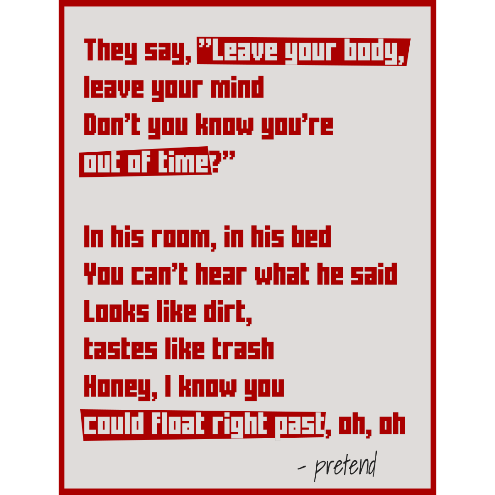

with a father that once was in a major league, people had a lot of expectation of him. One of his memorable moment was when he would hit bombs on the tiger stadium in a batting practice as a 12 years old boy. prince never really liked being under his dad shadow. he wants to make a name for himself. when he joined his father on being a rookie that had hit 50 homers within a season exclusive club, he hoped that he had hit 51 homers. Prince had one of the best personality in the major league. despite some injuries setback, he was good and fun. he reminds people of what baseball supposed to be or supposed to feel like. in 2016, he suffered an injury and hold one of the most heartbreaking press conference as he sat there with a broken neck, announcing that he won't be able to play baseball ever again. although he played for 12 season, more than most MLB players would, a more graceful way to retire would've suffice. even after every swing, every base path he ran, every attempt to "exorcising the demons that came with being the son of a prominent major-leaguer", he finishes his career with 319 home runs. the same exact number Cecil fielder did in his career.